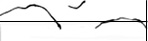
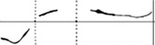
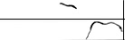

éMILE BELAN
|
L'approche et les performances musicales d'émile Belan peuvent se rattacher à ce qu'en ethnométhodologie on appelle le breaching. Avec ses oeuvres « polymorphes », un système complexe et "lacunaire" fait irruption dans la pensée compositionnelle en en transgressant les règles par la mise en dé-forme d'astreintes et de combinatoires,affirmant une idéalité non-efficiente... Quinze musiciens,
disposés dans l'espace en groupes de 5, 3, 2, 3 et 2
(=15 exécutants), exécutent chacun les
mêmes quinze pages graphiques (l'ordre de leur
exécution est laissé à la
discrétion, à l'initiative libre de chacun
d'entre eux), à partir d'une structure donnée
de quinze temps et de polarités harmoniques
spécifiques ; chacune des pages de "X" secondes
alternant avec un « break » ou temps mort, ou encore
une rupture de "Y" secondes.
Exemples : (break y =15'')
(break y = 45'') (break y = 1'15'') On demande à chaque interprète le respect le plus rigoureux de la structure des pages ; à chacun, selon sa complexion - ses (pré)dispositions, son (at)tension -, d'assumer la nécessaire « transgression » - dans l'effort même de s'y conformer ! - du principe, de façon à rendre opérante in fine la complexité de la partition, soutenant ainsi la permanence de l'impossible dans sa résorption même. Pour émile Belan, la musique ne constitue pas seulement un pur phénomène sonore, mais l'extension d'une action considérée comme acte global et - dans le mesure où l'expérience s'accomplit à plusieurs - transindividuel, générant une présence sonore non-continue, non-linéaire. La résolution sonore - la résonance produite par l'interprétation - participe en quelque sorte d'un niveau autre, celui, transcendantal, du dépassement. Elle ressort d'un « surcodage », d'une surdétermination des contraintes aptes à provoquer des « ruptures » à partir desquelles le musicien peut se mettre en mesure d'atteindre une expression plus totale de lui-même. Le principe idéal et stable de la partition subit dans son processus d'actualisation une réorganisation générale, bouleversant toute prévisibilité. Ces globalités isolées - toutes les individuations sonores - produisent ensemble une musicalité infiniment ouverte. En d'autres termes, à chaque interprétation, l'auditeur découvre la surprise d'une musicalité toujours émergente. Opèrent ici les éléments d'actualisation comme l'ordre des partitions, leur sens de lecture, leur position et leur format dans la structure temporelle, la polarité harmonique, les quanta d'effort ou/et d'empathie et autres « contingences ». Il ne s'agit pas à proprement parler pour le musicien d'interpréter mais de devenir un noeud alchimique autonome, distillateur, décanteur d'harmonies diffuses et éparses, selon l'infinité des combinatoires sonores. Quant au compositeur, son rôle, son inventivité consiste à dégager de nouveaux combinatoires et des corrélations qui rendent possibles des émergences nouvelles - et pourquoi pas des moments symbiotiques d'où surgissent la surprise ; celle de mettre en abyme la complexité elle-même et d'y puiser des quintessences. |
|
|
|
|
|